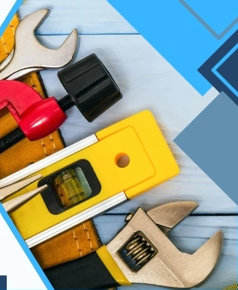

Fontanería
Consulta sobre instalaciones, reparaciones y mantenimiento de fontanería.
Consultar trabajoUn contacto directo para tus trabajos de fontanería, soldadura y albañilería. Cuéntame qué necesitas y solicita información o presupuesto.
Pedir presupuesto
Distintos oficios, un único contacto. Consulta el trabajo que necesitas realizar.
Consulta sobre instalaciones, reparaciones y mantenimiento de fontanería.
Consultar trabajoConsulta sobre trabajos de soldadura y reparaciones de elementos metálicos.
Consultar trabajoConsulta sobre trabajos de albañilería, mejoras y reparaciones.
Consultar trabajo¿Necesitas otro tipo de trabajo? Contacta para consultar disponibilidad.
El primer paso es contarme qué necesitas.
Llama o escribe por WhatsApp. Puedes describir el problema y compartir fotos si te resulta útil.
Comenta los detalles del trabajo, la disponibilidad y el presupuesto.
Acuerda directamente con el profesional los detalles antes de comenzar.
Elige cómo contactar conmigo: por teléfono, WhatsApp o correo electrónico. Cuéntame qué necesitas y solicita información o presupuesto.